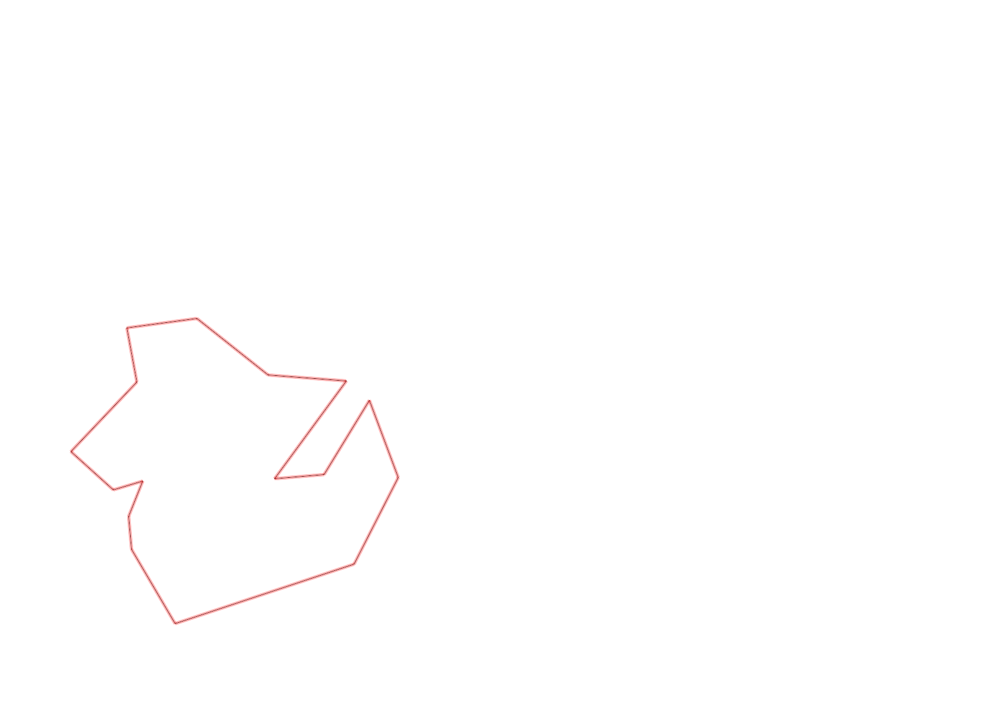
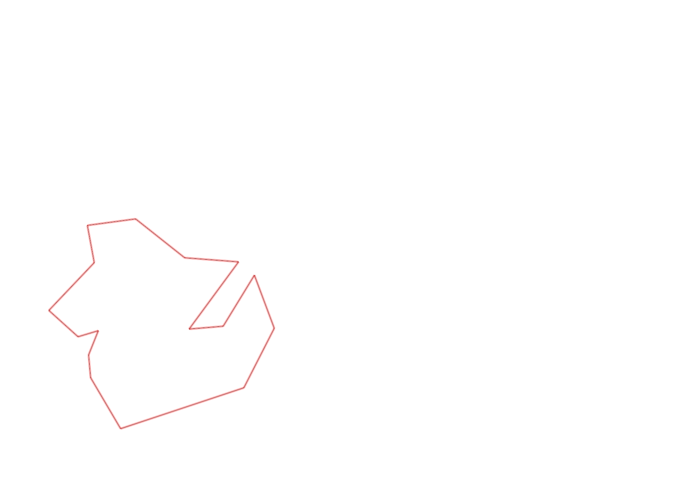

| Control |
Points |
Time Punched |
Distance |
Your Time |
Pace |
Place |
Fastest Time |
Median Time |
% Behind Fastest |
| 126 |
20 |
|
0.17 |
0:01:10 |
06:51 |
8 / 10 |
0:00:43 |
0:00:53 |
62% |
| 63 |
60 |
|
0.19 |
0:01:29 |
07:48 |
3 / 4 |
0:00:56 |
0:01:20 |
58% |
| 32 |
30 |
|
0.15 |
0:01:03 |
07:00 |
15 / 27 |
0:00:36 |
0:00:56 |
75% |
| 44 |
40 |
|
0.12 |
0:02:43 |
22:38 |
25 / 29 |
0:00:52 |
0:01:49 |
213% |
| 53 |
50 |
|
0.2 |
0:02:08 |
10:40 |
12 / 26 |
0:01:31 |
0:02:15 |
40% |
| 69 |
60 |
|
0.12 |
0:01:28 |
12:13 |
19 / 29 |
0:00:45 |
0:01:18 |
95% |
| 54 |
50 |
|
0.07 |
0:02:17 |
32:37 |
4 / 4 |
0:01:38 |
0:01:57 |
39% |
| 71 |
70 |
|
0.08 |
0:01:01 |
12:42 |
4 / 5 |
0:00:23 |
0:00:29 |
165% |
| 40 |
40 |
|
0.07 |
0:03:25 |
48:48 |
7 / 9 |
0:00:40 |
0:01:52 |
412% |
| 77 |
70 |
|
0.18 |
0:06:55 |
38:25 |
21 / 21 |
0:01:35 |
0:02:21 |
336% |
| 61 |
60 |
|
0.4 |
0:10:42 |
26:45 |
2 / 2 |
0:03:34 |
0:07:08 |
200% |
| 42 |
40 |
|
0.21 |
0:06:18 |
30:00 |
14 / 14 |
0:02:19 |
0:03:34 |
171% |
| 127 |
20 |
|
0.17 |
0:01:54 |
11:10 |
9 / 12 |
0:01:27 |
0:01:48 |
31% |
| 38 |
30 |
|
0.18 |
0:02:03 |
11:23 |
11 / 13 |
0:01:04 |
0:01:50 |
92% |
| 60 |
60 |
|
0.11 |
0:01:13 |
11:03 |
15 / 19 |
0:00:42 |
0:00:57 |
73% |
| Finish |
0 |
|
0.26 |
0:13:04 |
50:15 |
3 / 3 |
0:01:17 |
0:02:32 |
918% |
Total Distance Covered: 2.68km
Points Scored: 700
Late Penalty: 0
Final Score: 700
Total Time: 0hours 58minutes 53seconds
Efficiency: 261.19 points/km
 
